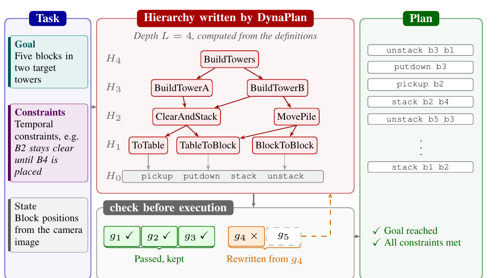
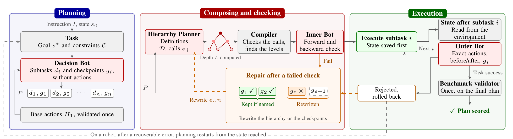
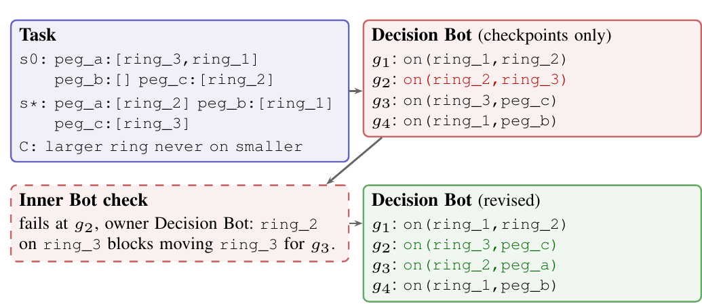
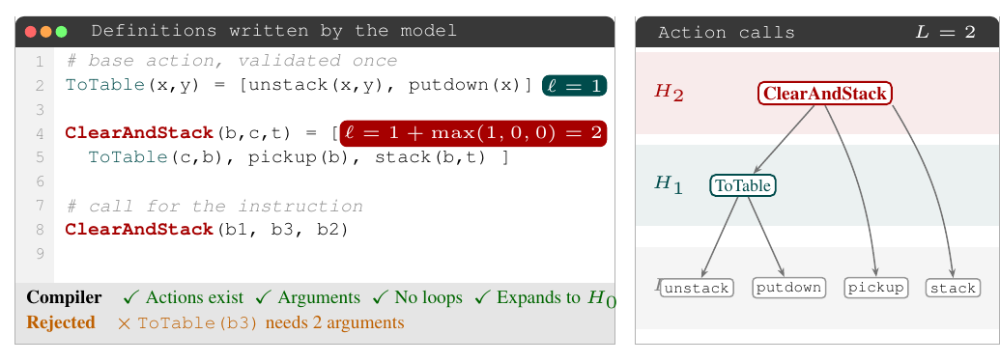
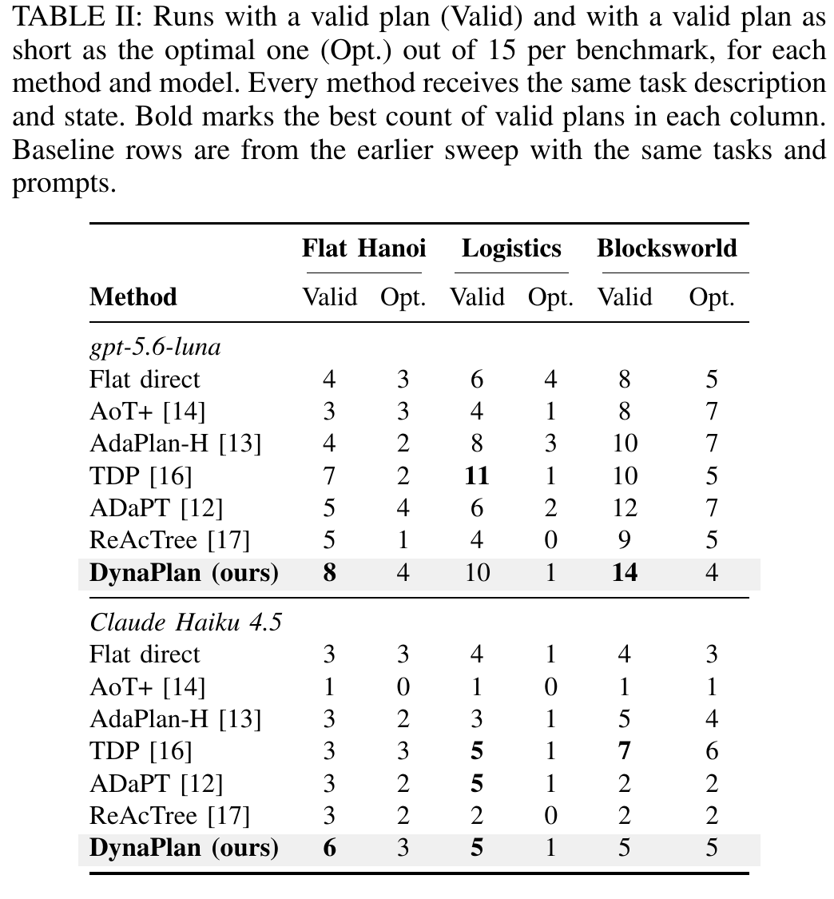
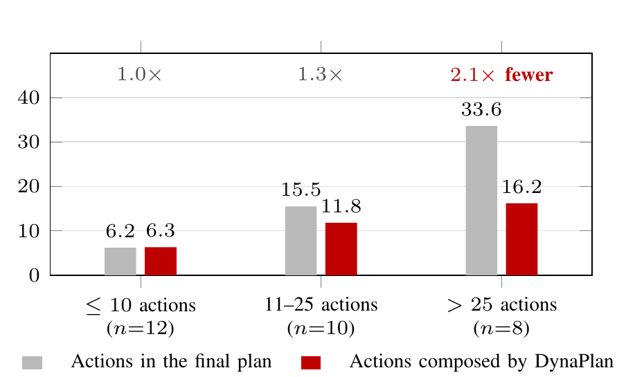
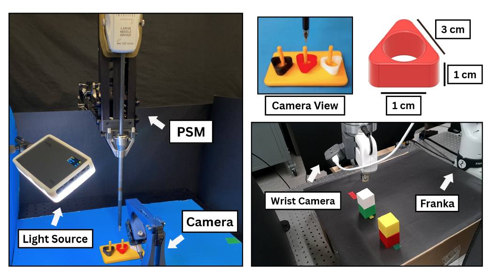

Language model planners for long-horizon robot tasks become less reliable as plans grow, since every action must be correct and earlier mistakes make later ones more likely. Hierarchical decomposition groups primitive steps into higher-level actions, but existing methods fix the number of levels in advance, and when composed actions may call only primitives the planner still writes out every step. We introduce DynaPlan, a planning framework in which composed actions may call other composed actions, so the number of levels is not fixed in advance.
A language model checks the fully expanded plan before execution, in a forward pass over its actions and a backward pass over its goals and constraints, and a failed plan is repaired by rewriting only the part at fault from the first failing subtask. We evaluate DynaPlan on flat Tower of Hanoi and on the Logistics and Blocksworld domains of the LexiCon benchmark, which adds temporal constraints to classical planning problems. We further validate DynaPlan on two real robots executing primitive skills, a dVRK solving flat Tower of Hanoi and a Franka arm solving Blocksworld problems.

DynaPlan on a Blocksworld task with temporal constraints. ClearAndStack is defined once and called by both BuildTower actions, and the depth of the hierarchy is computed from the definitions the model writes. Action names are illustrative.
A composed action may call other composed actions, so one definition can cover many primitive steps and the same structure can be reused wherever it repeats. Nothing in the pipeline sets a depth: the level of an action follows from what it calls, and the depth of the hierarchy is the largest level among the definitions. The full plan is recovered by expanding those definitions, without another call to the model.

The Decision Bot writes checkpoints without naming actions, the Hierarchy Planner composes the actions that reach them, a compiler expands everything into one list of primitive actions, and the Inner Bot checks that list before anything runs.
Planning and composition are separated. The Decision Bot writes a sequence of subtasks with a checkpoint for each, and never names an action, which keeps a mistake in the plan apart from a mistake in carrying it out. The Hierarchy Planner then composes the actions those checkpoints need, answering in JSON against a fixed schema. A compiler checks that every called action exists, that each call has the right number of arguments and that no action calls itself, computes the levels, and expands the calls into one ordered list of primitive actions grouped by subtask.

Checkpoints for a three-ring flat Tower of Hanoi task. The check finds that checkpoint g2 blocks a later one and assigns the fault to the Decision Bot, which rewrites the checkpoints from g2 onward while g1 is kept.
One model call checks the expanded plan in two passes. The forward pass starts from the initial state, tests every primitive action against its preconditions, applies its effects, tracks each temporal constraint and tests every checkpoint, stopping at the first error. The backward pass starts from each goal and constraint, traces it to the action or initial fact that establishes it, checks that nothing later undoes it, and looks for a counterexample to the forward conclusion. A rejection names the artifact at fault, and only that artifact is written again before the whole plan is checked once more.

Definitions written by the model for a Blocksworld task, coloured by level, with the calls between actions on the right. ClearAndStack calls a base action and two primitives, so it has level 2.
During execution each subtask is run against a saved state. An Outer Bot then reviews the exact actions and the state before and after against the checkpoint, without seeing the first check's verdict, so the two judgments stay independent. A rejected plan is rolled back and repaired. The benchmark's validator is withheld until the end and scores the submitted plan once, so no scoring signal leaks into planning.
We evaluate on flat Tower of Hanoi and on the Logistics and Blocksworld domains of LexiCon, which states temporal constraints in natural language. Each method plans 15 tasks per benchmark with two models, under the same task description, the same action and constraint definitions and the same instruction to use as few actions as possible. No method, DynaPlan included, sees the validator during planning.

Valid plans, and valid plans as short as the optimal one, out of 15 per benchmark. DynaPlan solves the most flat Tower of Hanoi tasks with both models, and it is the only planner to solve a Hanoi instance whose optimal solution is 35 moves long, where no baseline solves one longer than 11 moves.
A planner that writes its plan directly has to produce every action the robot executes. DynaPlan instead composes one call per subtask and the definitions those calls use, and the compiler expands them into the actions that run.

On plans of ten actions or fewer, composition saves nothing. On plans longer than 25 actions the model composes 16.2 actions for a 33.6-action plan, a factor of 2.1. Base actions are written once per task and are not counted.
The pipeline as it runs in the released code. The repair budget is 15 rounds after the first attempt. Structure is handled deterministically, every semantic judgment online is made by a language model, and the benchmark's validator runs once at the end.
Input : instruction I, initial state s0, goal s*, constraints C,
base action signatures H1, repair budget R = 15
Output: one primitive plan, or the furthest plan reached
1 check that s*, C match I (one model call)
2 write and validate the base actions H1, then cache them
3 P <- Decision Bot: subtasks d_1..d_n with checkpoints g_1..g_n,
written without naming any action
4 D, a <- Hierarchy Planner: definitions and per-subtask calls (JSON)
5 compile D: every callee exists, arities match, no action calls
itself; compute the level of each action; expand the calls
into one primitive trace T grouped by subtask
6 for round = 0 .. R:
7 verdict, e, owner <- Inner Bot check of T (one call)
8 forward : each primitive against its preconditions,
9 constraints tracked, checkpoints tested,
10 stopping at the first error
11 backward: each goal and constraint traced to what
12 establishes it, checking nothing undoes it
13 if verdict = INVALID:
14 rewrite the artifact named by owner (hierarchy or plan P);
15 keep subtasks before e only when a deterministic check of
16 the Decision Bot output names e; recompile and continue
17 else:
18 for subtask i = 1 .. n:
19 save the state, execute the primitives of a_i
20 outcome <- Outer Bot review of the exact actions, the
21 states before and after, and g_i
22 (the Inner Bot verdict is withheld)
23 if outcome = rejected:
24 restore the saved state, rewrite as above, break
25 if outcome = task success:
26 return the executed plan
27 return the plan that reached the furthest point, marked uncertified

Left: a da Vinci Research Kit patient side manipulator with a Large Needle Driver, a light source and a fixed camera viewing 3D-printed rings on a peg board. Top right: the camera view the state is read from, and the ring dimensions. Bottom right: a Franka Emika arm with a parallel-jaw gripper and coloured blocks on a tabletop.
Both robots execute fixed primitive skills with no learned policy, and the state after each subtask is read by colour thresholding against a fixed palette, which is why the rings and blocks use saturated colours. On the dVRK a ring move expands to four primitives, and on the Franka a block move expands to two.
The anonymized codebase contains the DynaPlan framework and the benchmark harness: the Decision Bot, Hierarchy Planner, compiler, Inner Bot and Outer Bot, the prompts, and the scripts that run the frozen task registry. Third-party baselines and the LexiCon benchmark are linked from the README instead of being vendored, and no model outputs or run logs are included, so every number can be reproduced from the released scripts.